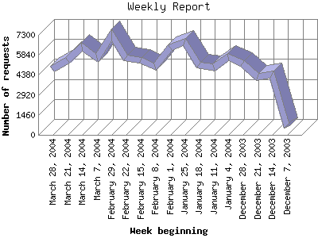

The Weekly Report identifies the activity for each week within the report
time frame. Remember that one page hit can result in several server requests
as the images for each page are loaded.
Note: Depending on the
report time frame for this report the first and last week may not represent
a full seven day week, resulting in lower hits.

| Week beginning | Number of requests | Number of page requests | |
|---|---|---|---|
| 1. | December 7, 2003 | 599 | 119 |
| 2. | December 14, 2003 | 4,379 | 534 |
| 3. | December 21, 2003 | 4,218 | 618 |
| 4. | December 28, 2003 | 5,218 | 697 |
| 5. | January 4, 2004 | 5,667 | 725 |
| 6. | January 11, 2004 | 4,920 | 637 |
| 7. | January 18, 2004 | 5,121 | 631 |
| 8. | January 25, 2004 | 6,801 | 789 |
| 9. | February 1, 2004 | 6,399 | 852 |
| 10. | February 8, 2004 | 4,986 | 624 |
| 11. | February 15, 2004 | 5,442 | 837 |
| 12. | February 22, 2004 | 5,600 | 667 |
| 13. | February 29, 2004 | 7,283 | 896 |
| 14. | March 7, 2004 | 5,612 | 752 |
| 15. | March 14, 2004 | 6,417 | 790 |
| 16. | March 21, 2004 | 5,473 | 749 |
| 17. | March 28, 2004 | 4,801 | 529 |
Most active week beginning February 29, 2004 : 896 pages sent.
Weekly average: 635.888888888889 pages sent. 101.257 TB bytes served. 4940.88888888889 requests handled.
This report was generated on April 3, 2004 00:36.
Report time frame December 11, 2003 00:13 to April 2, 2004 23:56.
| Web statistics report produced by: | |
| analog 5.1 | Report Magic for Analog 2.10 |